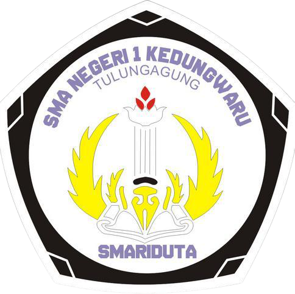

🦴
🏺
🗿
🌋
⏳
🧭

SMA NEGERI 1 KEDUNGWARU
Kabupaten Tulungagung
⚡ Petualangan Sejarah Interaktif
CHRONOS
-
SPHERE
Jelajah Ruang & Waktu
“Temukan bukti • Hubungkan makna • Ciptakan gagasan”
▶
Mulai Petualangan
🗺️ 6 Situs Prasejarah
🌏 4 Teori Asal-Usul
🏆 Papan Skor
Mulai di sini
🗺️
Peta Eksplorasi
Kunjungi situs manusia purba dan jelajahi tur 360°.
Buka
→
🌏
Teori Asal-Usul
Yunnan, Taiwan, Afrika, dan Nusantara. Dari mana leluhur kita?
Buka
→
🎮
Kuis Petualangan
Jawab cepat, kumpulkan poin, dan naik ke papan peringkat!
Main
→
🧭
Jejak Nenek Moyang
Selesaikan misi untuk menelusuri jejak leluhur.
Mulai
→
💡
Tantangan Masa Kini
Ubah pengetahuan sejarah menjadi gagasan nyata.
Coba
→
🖼️
Galeri Karya
Pamerkan karyamu dan lihat karya teman-temanmu.
Lihat
→